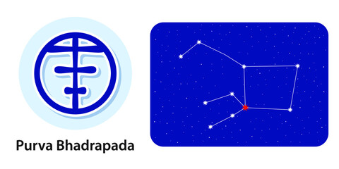

<
1st Pada: The Purva Bhadrapada Nakshatra’s first pada falls in the Aries Navamsa ruled by Mars. The natives here are more mentally aggressive than physically. Here, the natives’ focus will be on controlling their temper and aggression, mustering the will-power to achieve their goals.
2nd Pada: The second pada of the Purva Bhadrapada Nakshatra falls in the Taurus Navamsa ruled by Venus. Here the focus is on being indulgent. The native is energetic as they are prone to physically expressing the dark side of their natures.
3rd Pada: The third pada of the Purva Bhadrapada Nakshatra falls in the Gemini Navamsa ruled by Mercury. Here the focus is on communication, and the native is curious. Here, they express the lighter aspects of their nature, such as a sense of humour.
4th Pada: 4th Pada: The fourth pada of the Purva Bhadrapada Nakshatra falls in the Cancer Navamsa ruled by the Moon. Here, the natives’ focus can be too dangerous, as they manifest the aspects of both the persecutor and persecuted. These natives are compatible with the natives of the other three padas.
“the first of the blessed feet”α and β Pegasi
Lord: Guru (Jupiter)
Symbol : Swords or two front legs of funeral cot, man with two faces
Deity : Ajikapada, an ancient fire dragon
Stone: Yellow Sapphire is your lucky stone.
Lucky numbers : 4 and 8
Lucky Day: Wednesday and Saturday
If a baby born in this nakshatra give her or him a name with starting letter “S” or “D”.
These persons should not live in West facing houses.
Persons born in Purvabhadra nakshatram will have good taarabalam with following nakshatrams:
Pushyami, Magha, Uttara, Chitta, Swati, Anuradha, Moola, Uttarashada, Dhanishta, Satabisham, Uttarabhadra, Aswini, Kritika, Mirgasira, Arudra.
Indian zodiac: 20° Kumbha – 3°20′ Meena
Western zodiac 16° – 29°20′ Pisces
Purva Bhadrapada Nakshatra
Characteristics male
The native of the Purva Bhadrapada Nakshatra is usually a peace-loving person but flares up occasionally. He likes to lead a simple life. Since he follows strict values, he has to suffer whenever he sees these values being violated. When he speaks, he does not take sides but speaks impartially. He does not blindly believe in religious principles. Although he helps the needy, all he gets in return is hatred and resistance. He is very religious and prays and performs all rituals, as indicated in scriptures. Though he may sometimes be financially weak, he gets a lot of respect from others.Profession male
The native of the Purva Bhadrapada Nakshatra is intelligent and has excellent business acumen. The natives employed by the government are likely to gain handsomely by perks, promotions and salary hikes. This native is both socially and financially independent. His most fruitful years will be between the ages of 24 and 33 years. However, his golden phase will be between the ages of 40 and 54.Compatibility male
The native of the Purva Bhadrapada Nakshatra is unlikely to get his mother’s love. This native can be the cause of the death or separation of his mother. But, it is also possible that he does not get his mother’s full love as she may be a working woman.Health male
The male native of the Purva Bhadrapada Nakshatra is prone to paralytic attack, acidity, and diabetes. He is also likely to face problems in the ribs, sides of his abdomen and his feet.Characteristics female
The female native of the Purva Bhadrapada Nakshatra is sincere when it comes to working. Nothing in this world or the next can shake this native from her principles. She has leadership qualities from birth. It is easy for her to get others to do the work smoothly and to be successful as a leader. Though she is generous and well disposed to help the needy, she will not do it until she is fully convinced that the concerned person is indigent.Profession female
The female native of the Purva Bhadrapada will be educated in the fields of science and technology. Therefore, She is likely to become a teacher or a scientist. However, she may also take up the professions in statistics, astrology or research.Compatibility female
The female native of the Purva Bhadrapada Nakshatra will be very attached to her husband and will be blessed with lots of children. She is good at managing the house-hold activities and will enjoy bringing up her children.Health female
he female natives of Purva Bhadrapada Nakshatra are likely to face some health issues like low blood pressure, pain in ankles, apoplexy, liver problems, and vibration.Purva Bhadrapada Nakshatra Padas
1st Pada: The Purva Bhadrapada Nakshatra’s first pada falls in the Aries Navamsa ruled by Mars. The natives here are more mentally aggressive than physically. Here, the natives’ focus will be on controlling their temper and aggression, mustering the will-power to achieve their goals.
2nd Pada: The second pada of the Purva Bhadrapada Nakshatra falls in the Taurus Navamsa ruled by Venus. Here the focus is on being indulgent. The native is energetic as they are prone to physically expressing the dark side of their natures.
3rd Pada: The third pada of the Purva Bhadrapada Nakshatra falls in the Gemini Navamsa ruled by Mercury. Here the focus is on communication, and the native is curious. Here, they express the lighter aspects of their nature, such as a sense of humour.
4th Pada: 4th Pada: The fourth pada of the Purva Bhadrapada Nakshatra falls in the Cancer Navamsa ruled by the Moon. Here, the natives’ focus can be too dangerous, as they manifest the aspects of both the persecutor and persecuted. These natives are compatible with the natives of the other three padas.